Префектура Ниигата · Уонума · онсэн
Онсэн Тотиомата и рёкан «Дзидзайкан»: час в тёплой воде и несколько ночей тишины
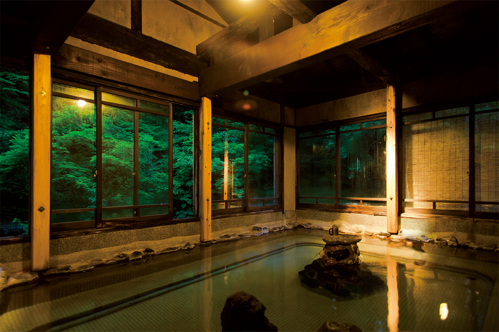
В горах Уонумы, на онсэне Тотиомата, вода выходит из земли при температуре около 36 градусов, почти как тело человека. В ней не прогреваются за пять минут, а лежат по часу, читают и даже засыпают. Рёкан «Дзидзайкан» живёт по ритму этой воды.
Онсэн
Вода температуры тела
Бывают дни, когда хочется снять доспехи, положить меч и просто ни о чём не думать. Исследовательница онсэнов советует в такие дни ехать на онсэн, где можно набраться сил. Один из её любимых адресов находится в префектуре Ниигата: онсэн Тотиомата в горах Уонумы.
Вода здесь радоновая, щелочная и очень мягкая. Её температура около 36 градусов, и в ванны она идёт как есть, без подогрева и без разбавления. Радон, по словам исследовательницы, мягко согревает тело и придаёт сил клеткам. Купаются в такой воде долго. Тёплый источник, по её словам, это место отдыха на все времена: в него хочется лечь и в летнюю жару, и зимой, пробившись сквозь сугробы.
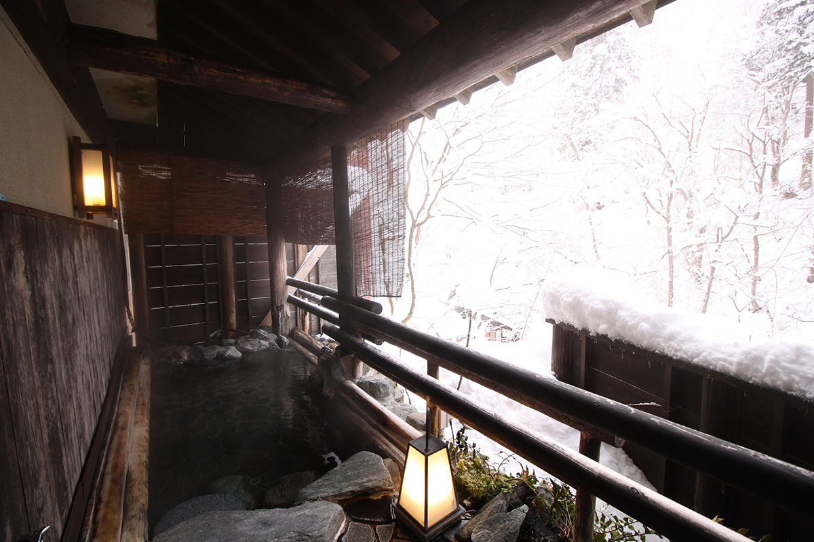
Добраться сюда проще, чем кажется. От станции Ураса на синкансэне Дзёэцу гостиничный автобус за 40 минут довозит гостей прямо до дверей рёкана. Из города можно попасть в горную тишину почти без пересадок, и для уставших горожан это одно из главных достоинств места.
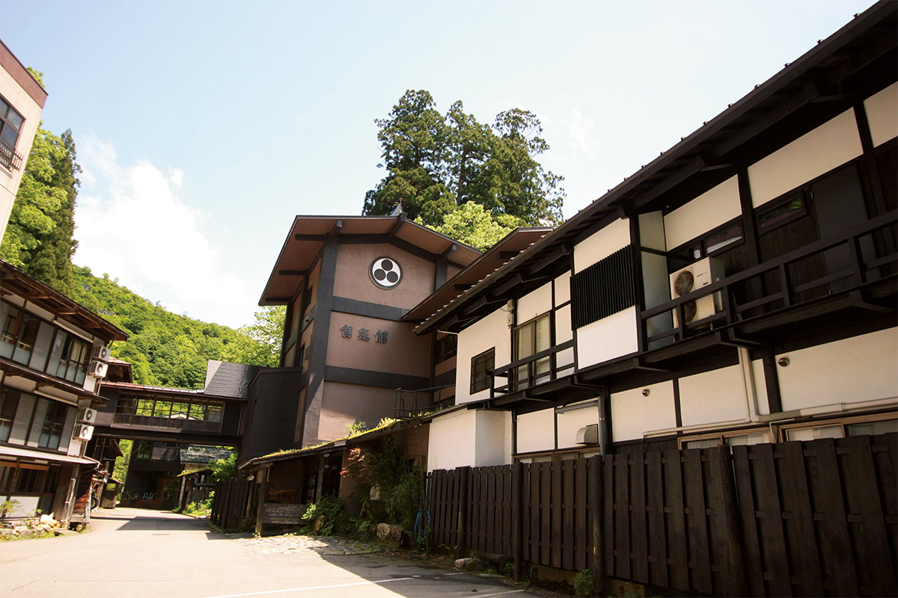
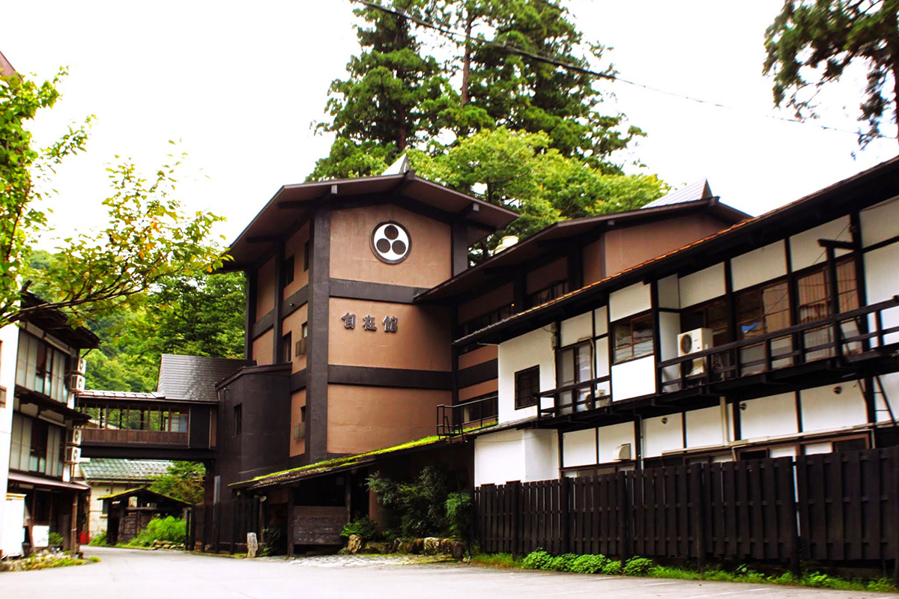
Купальни
Три общие ванны и три отдельные
Главная купальня «Рэйсэн-но ю» принадлежит всему онсэну Тотиомата. В ней три ванны, а мужскую и женскую половины меняют каждый день. Самая старая из них, «Сита-но ю», находится внизу длинной лестницы, у горного ручья, рядом с самим источником. Здесь кладут голову на каменный край ванны, закрывают глаза и лежат в тёплой воде. Через какое-то время перестаёшь понимать, где кончается тело и начинается вода, и кажется, что паришь в открытом космосе.
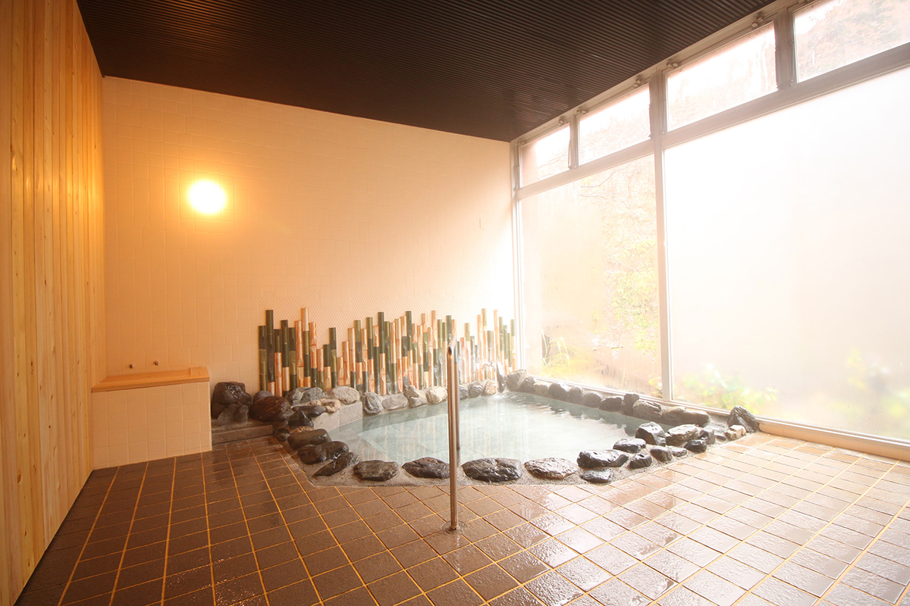
Кроме общих купален, в самом рёкане есть три отдельные, которые бронируют заранее и за которые не берут плату. Вода в них тоже из собственного источника, без разбавления, но подогретая до 39–42 градусов. Здесь можно купаться, ни на кого не оглядываясь.
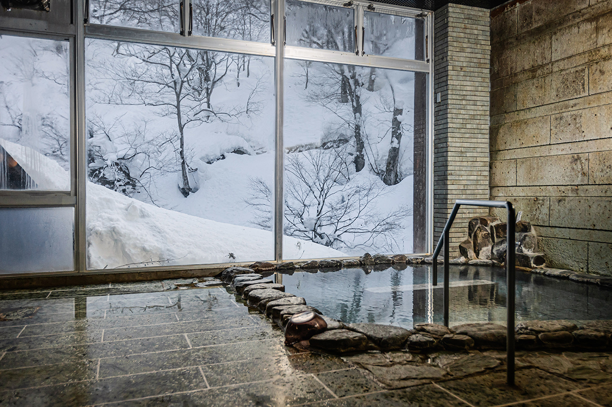
Ритуал
Полчаса в тёплой, потом в горячую
На Тотиомата сложилась своя манера купания. Сначала около получаса лежат в ванне с водой источника, температура которой равна температуре тела. Когда становится чуть прохладно, переходят в ванну с подогретой водой, согреваются и снова возвращаются в тёплую. Так купаются примерно час. Кто-то дремлет прямо в воде, кто-то читает, кто-то смотрит в одну точку, и никого это не удивляет.
Вода действует не сразу, а понемногу. Гости рассказывают, что у них проходит скованность в теле, кожа становится гладкой, а белки глаз светлеют. Тёплая вода к тому же сильно клонит в сон. В первый день почти все только купаются, едят и спят. На второй и третий появляются силы почитать книгу или открыть ноутбук, и к третьему дню тело кажется непривычно лёгким. Впрочем, и одной формулы «поесть, поспать, искупаться» вполне хватает для счастья.
Поэтому в Тотиомата советуют оставаться на несколько ночей. Не нужно никуда переезжать, и целый день можно провести между купальней и комнатой.
Рёкан
Еда для лечебного отдыха и крепкий сон
Кормят в «Дзидзайкане» так, как принято при тодзи, долгом лечебном отдыхе на источниках. Базовый набор состоит из супа и четырёх блюд: много овощей и горных трав, мясо и рыба в меру, к ним рис косихикари из Уонумы. Готовят хозяйка рёкана и местные женщины, и меню меняется каждый день, чтобы гостю не надоело даже за долгое время.
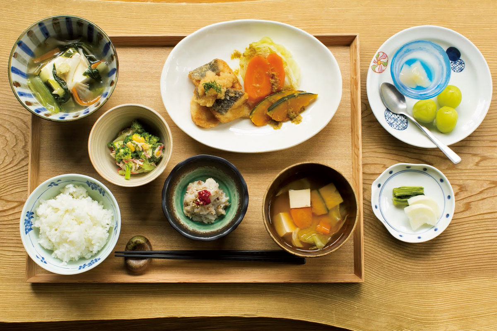
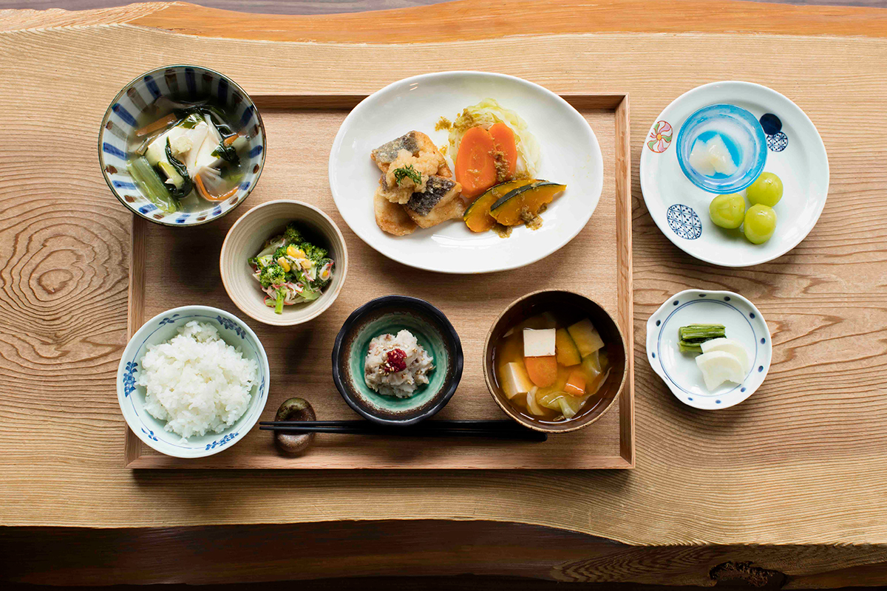
К основному набору можно заказать горную форель ивана, жаренную на углях, или набэ с уткой. А к ужину выпить бокал местного сакэ Ниигаты.
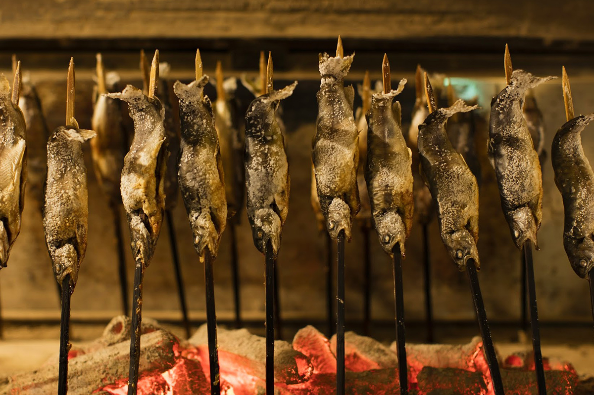
В номерах японские комнаты с татами: в одних стоят кровати, в других расстилают футоны, причём постель готова уже к приезду гостя. Постельное бельё выбирали ради крепкого сна, и после тёплой воды здесь засыпают, будто проваливаются на дно глубокого моря.
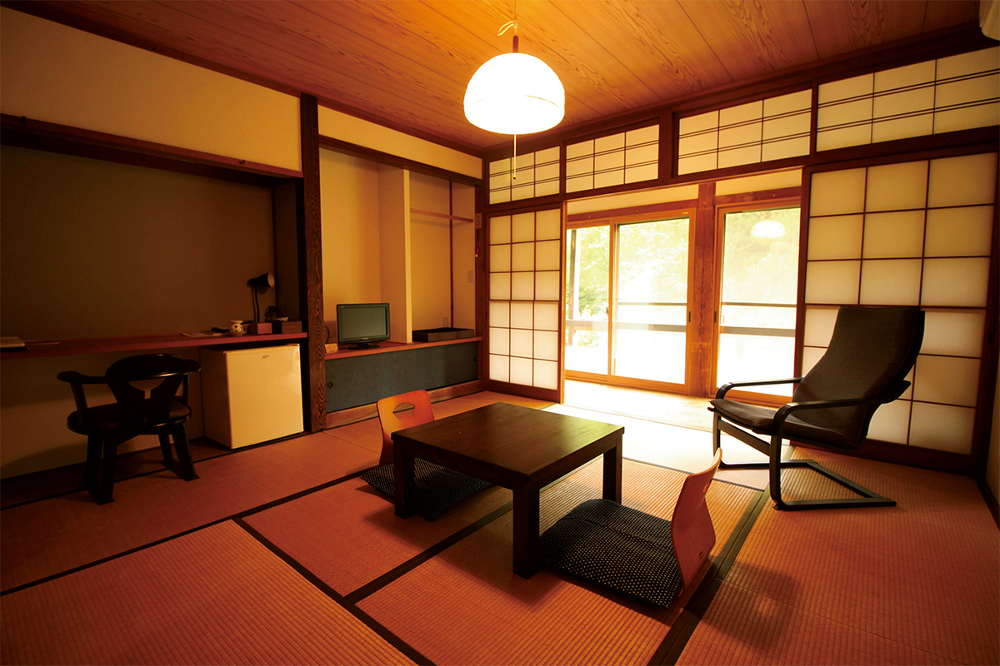
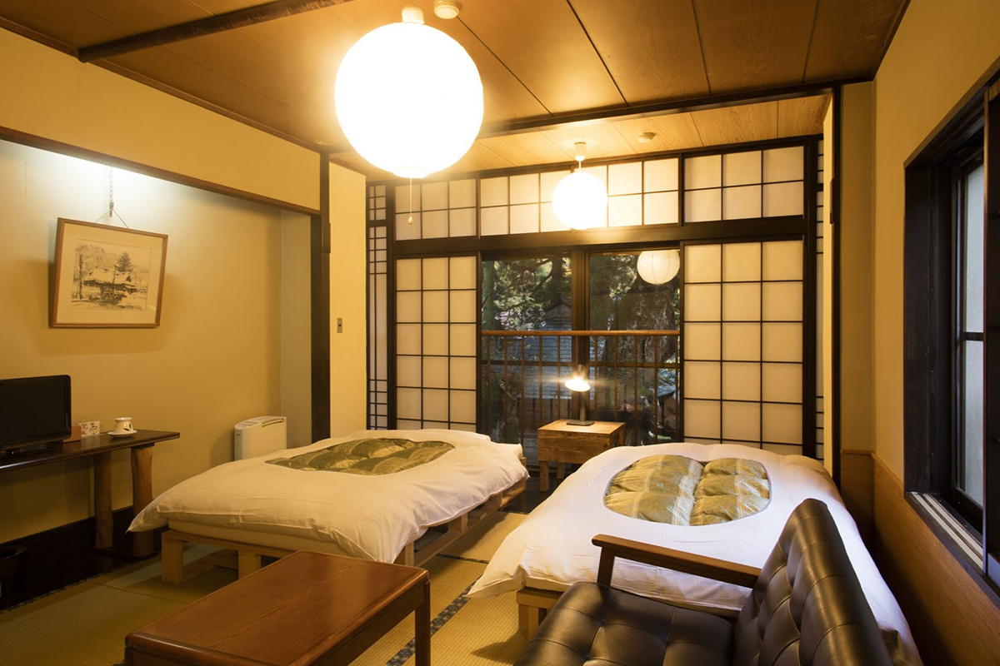
Wi-Fi есть во всём рёкане, так что работать можно и в номере. Если нужен большой стол, можно работать в лобби и в столовой, где в 2024 году можно было и пообедать. По четвергам в рёкане проводили сеансы медитации дзадзэн.
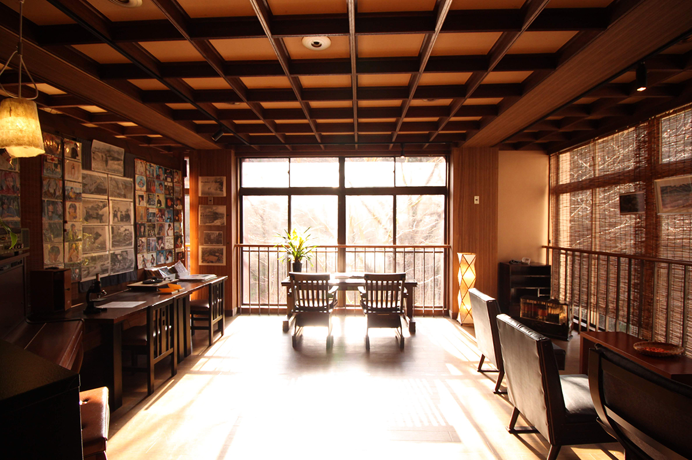
Рёкан «Дзидзайкан»
- Адрес
- префектура Ниигата, Уонума, онсэн Тотиомата
- Телефон
- +81 25-795-2211 (9:00–17:00)
- Цены / Вход
- ночь с ужином и завтраком от 17 270 иен (налог и обслуживание включены), при проживании несколько ночей скидка
- Заезд / выезд
- 15:00 / 11:00
- Часы работы
- купание без ночлега 11:00–14:00 или до 15:00, по предварительной записи
- Как добраться
- от станции Ураса (JR) гостиничным автобусом около 40 минут; на машине около 20 минут от съезда Коидэ скоростной дороги Канэцу
- Сайт
- jizaikan.jp